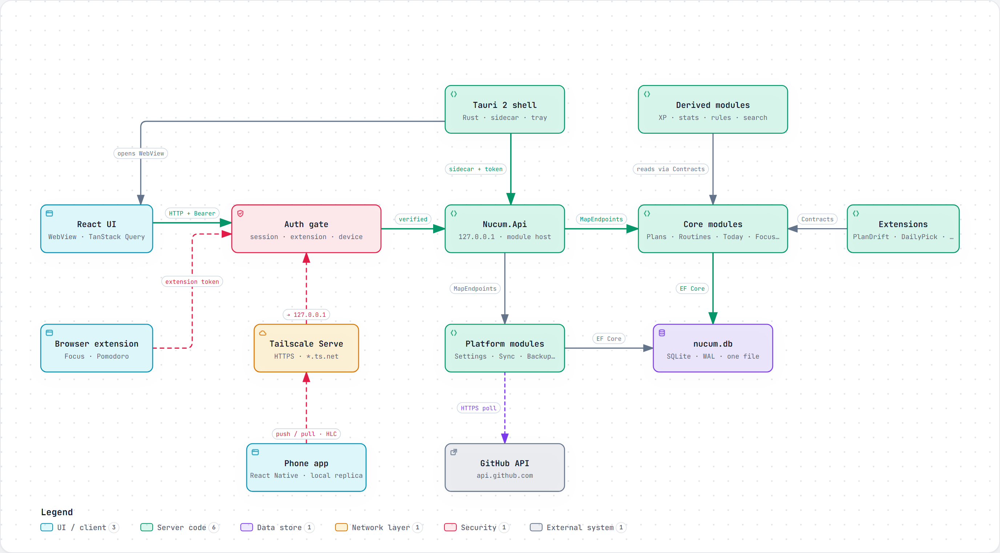
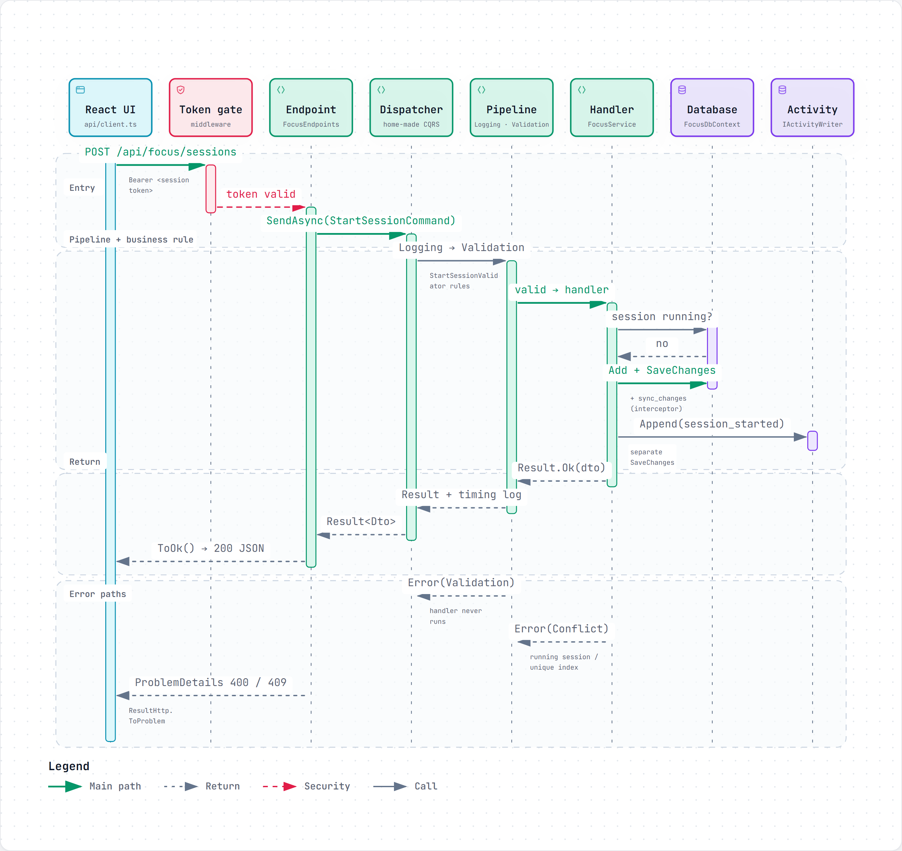
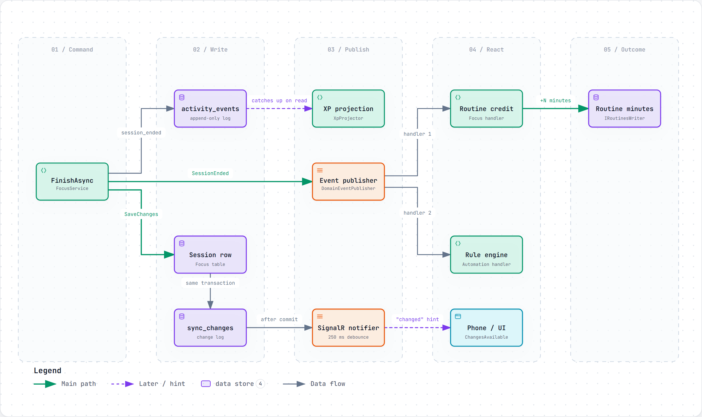
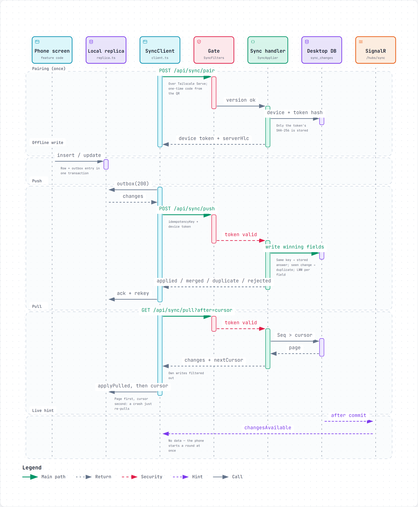
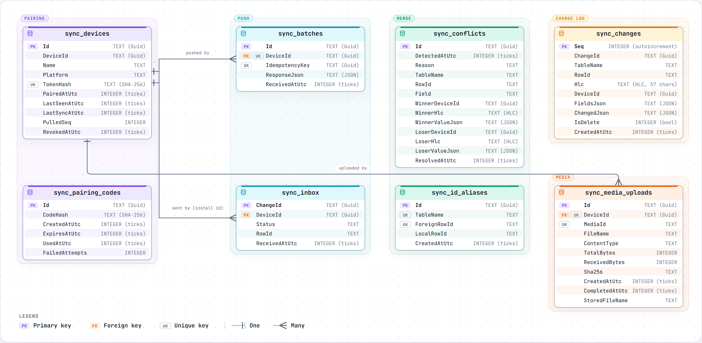
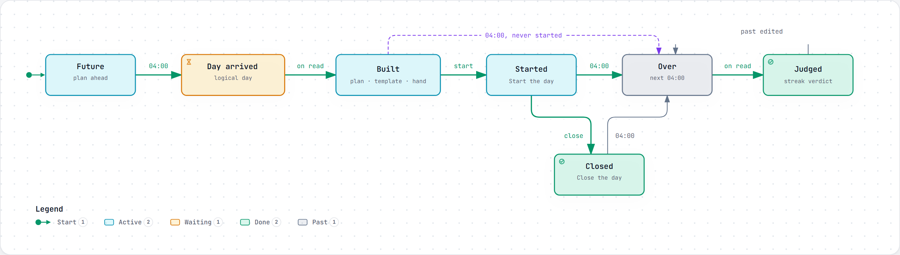
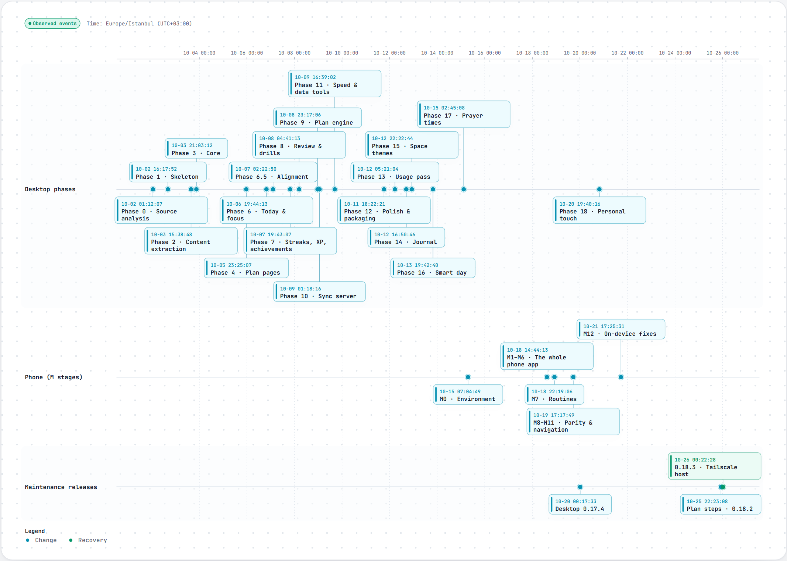

Code-backed architecture diagrams
Each diagram was authored from the source code, and every box carries the file and line it came from. Open one to zoom, search, trace a path or switch between light and dark.

System overview
Shell, UI, auth gate, API host, module groups, database, phone and extension — and which token each client carries.
Open interactive →
Request pipeline
Middleware → endpoint → own CQRS dispatcher → logging/validation → handler → Result<T> → ProblemDetails, including the error paths.
Open interactive →
Event flow
What one finished focus session writes, publishes and triggers: change log, append-only event log, handlers, XP projection, live hint.
Open interactive →
Phone sync
QR pairing, retry-safe push in three layers, cursor-based pull, per-field last-writer-wins on a hybrid logical clock.
Open interactive →
Sync schema
Devices, pairing codes, batches, inbox, conflicts, id aliases, media uploads and the change log — every column and type.
Open interactive →
Lifecycle of a day
A logical day that ends at 04:00 — and why nothing has to run at 04:00: everything catches up on read, idempotently.
Open interactive →
Development timeline
19 desktop phases, 5 phone stages and maintenance releases, taken from git tags and report commits.
Open interactive →The application source is private. Source references inside the diagrams name the file and line in that private repository; a selection of those files is published in code-samples/.